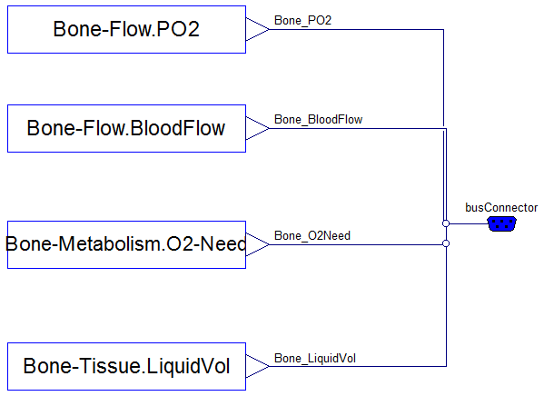
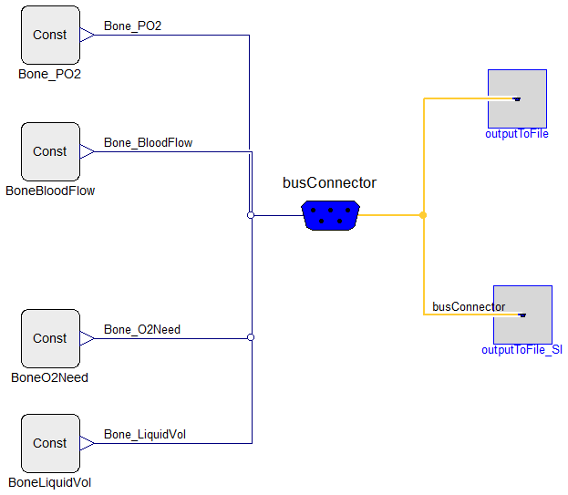

Subsystem initial and terminal data manipulations using busConnector (Physiomodel expandable connector).
Implementation:
Model should be divided into subsystems, which has output variables grouped to busConnector (variables, which are inputs to other subsystems). For each subsystem S: all these variables should be defined in extended redeclared class S.IO_Bus.Variables, where package S.IO_Bus is extended from Physiolibrary.Types.IO_Bus.
Usage:
For loading values in SI units of these variables from file "io/input_SI.txt" use block S.IO_Bus.InputFromFile_SI.
For loading values in non-SI units of these variables from file "io/input.txt" use block S.IO_Bus.InputFromFile.
For storing values in SI units of these variables from file "io/output_SI.txt" use block S.IO_Bus.OutputToFile_SI.
For storing values in non-SI units of these variables from file "io/output.txt" use block S.IO_Bus.OutputToFile.
For comparison values in SI units of these variables with file "io/input_SI.txt" use block S.IO_Bus.OutputComparison_SI and result will be stored as "io/comparison_SI.txt".
For comparison values in non-SI units of these variables with file "io/input.txt" use block S.IO_Bus.OutputComparison and result will be stored as "io/comparison.txt".
Extends from Physiolibrary.Types.IO_Bus (Subsystem outputs manipulation).
| Name | Description |
|---|---|
| Variables | Example of subsystem outputs |
| Test | |
| Inherited | |
| Redefine this package only if there are not possible to use Physiolibrary types for variables! | |
| Load values in non-SI units from file io/input.txt | |
| Store values in non-SI units to file io/output.txt | |
| Compare values in non-SI units with file io/input.txt and store results to io/comparison.txt | |
| Load values in SI units from file io/input_SI.txt | |
| Store values in SI units to file io/output_SI.txt | |
| Compare values in SI units with file io/input_SI.txt and store results to io/comparison_SI.txt | |
Example of subsystem outputs

Extends from (Subsystem output busConnector variables).
| Type | Name | Default | Description |
|---|---|---|---|
| replaceable block BooleanVariable | Parameter | ||
| Type | Name | Description |
|---|---|---|
| BusConnector | busConnector |

Extends from Modelica.Icons.Example (Icon for runnable examples).
| Type | Name | Description |
|---|---|---|
| BusConnector | busConnector |